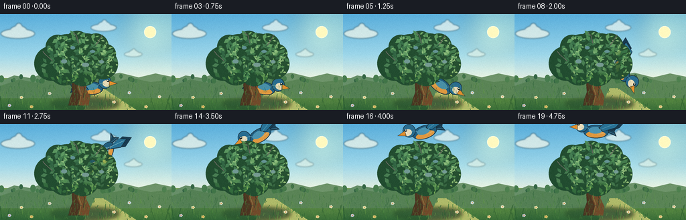
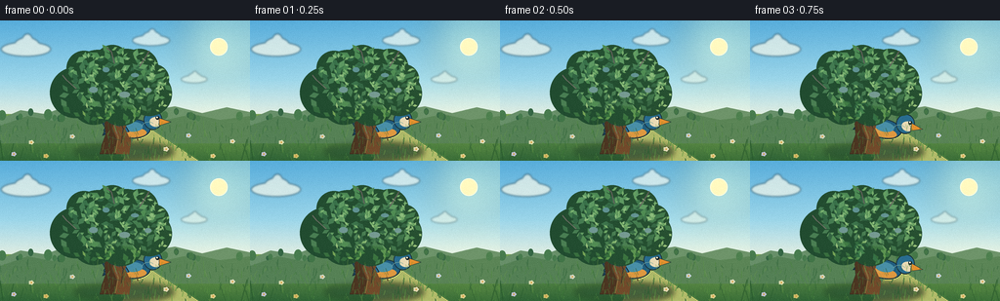
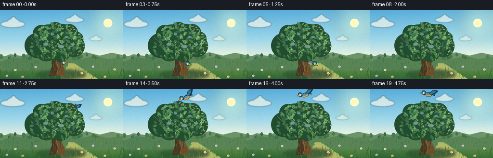
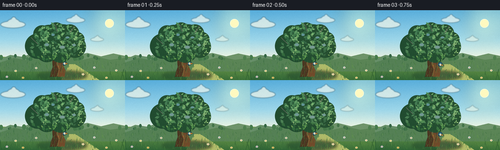
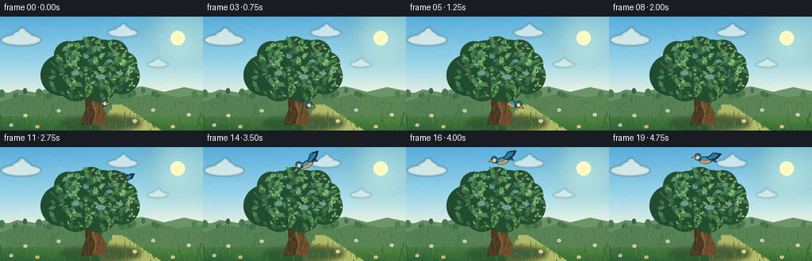

CODING AGENTS AS PIXEL WORLD MODELS
traex/DeepSeek-V4.1-Flash · dynamic_spatial_relationship_0051
点击播放 · 原生 RGB 像素
逐轮保存的候选
回放视频、检查图与代码变化。
每份候选均可单独播放。实际图片检查记录在下方工具轨迹中。
候选 01播放与检查图
点击播放 · 原生 RGB 像素


展开代码变化
--- 上一保存版本
+++ 本次保存版本
@@ -0,0 +1,549 @@
+from pathlib import Path
+import math
+import random
+
+import numpy as np
+from PIL import Image, ImageDraw, ImageFilter
+
+import artifact_io
+
+
+WIDTH = 256
+HEIGHT = 144
+FPS = 4
+FRAME_COUNT = 20
+SS = 4
+W = WIDTH * SS
+H = HEIGHT * SS
+
+
+def s(value):
+ return int(round(value * SS))
+
+
+def xy(points):
+ return [(s(x), s(y)) for x, y in points]
+
+
+def rgba(hex_color, alpha=255):
+ hex_color = hex_color.lstrip("#")
+ return tuple(int(hex_color[i : i + 2], 16) for i in (0, 2, 4)) + (alpha,)
+
+
+def mix(a, b, amount):
+ amount = max(0.0, min(1.0, amount))
+ return tuple(int(round(a[i] * (1.0 - amount) + b[i] * amount)) for i in range(3))
+
+
+def smoothstep(value):
+ value = max(0.0, min(1.0, value))
+ return value * value * (3.0 - 2.0 * value)
+
+
+def bezier_point(t):
+ p0 = np.array([135.0, 111.0])
+ p1 = np.array([165.0, 107.0])
+ p2 = np.array([185.0, 40.0])
+ p3 = np.array([122.0, 12.0])
+ q = 1.0 - t
+ return q**3 * p0 + 3.0 * q**2 * t * p1 + 3.0 * q * t**2 * p2 + t**3 * p3
+
+
+def bezier_tangent(t):
+ p0 = np.array([135.0, 111.0])
+ p1 = np.array([165.0, 107.0])
+ p2 = np.array([185.0, 40.0])
+ p3 = np.array([122.0, 12.0])
+ q = 1.0 - t
+ return 3.0 * q**2 * (p1 - p0) + 6.0 * q * t * (p2 - p1) + 3.0 * t**2 * (p3 - p2)
+
+
+def make_background():
+ yy, xx = np.mgrid[0:H, 0:W]
+ sky_top = np.array([89, 174, 219], dtype=float)
+ sky_mid = np.array([159, 216, 234], dtype=float)
+ sky_low = np.array([231, 241, 226], dtype=float)
+
+ v = np.clip(yy / s(98), 0.0, 1.0)
+ sky = np.empty((H, W, 3), dtype=float)
+ upper = v < 0.62
+ blend_upper = np.clip(v / 0.62, 0.0, 1.0)
+ blend_lower = np.clip((v - 0.62) / 0.38, 0.0, 1.0)
+ for channel in range(3):
+ sky[..., channel] = np.where(
+ upper,
+ sky_top[channel] * (1.0 - blend_upper) + sky_mid[channel] * blend_upper,
+ sky_mid[channel] * (1.0 - blend_lower) + sky_low[channel] * blend_lower,
+ )
+
+ # Warm late-afternoon glow around the sun.
+ distance = np.sqrt((xx - s(224)) ** 2 + (yy - s(26)) ** 2)
+ glow = np.clip(1.0 - distance / s(105), 0.0, 1.0) ** 2
+ sky += glow[..., None] * np.array([28.0, 20.0, 5.0])
+
+ ground_top = np.array([128, 169, 82], dtype=float)
+ ground_bottom = np.array([53, 105, 55], dtype=float)
+ ground_v = np.clip((yy - s(94)) / s(50), 0.0, 1.0)
+ ground = np.empty((H, W, 3), dtype=float)
+ for channel in range(3):
+ ground[..., channel] = (
+ ground_top[channel] * (1.0 - ground_v)
+ + ground_bottom[channel] * ground_v
+ )
+ # Add gentle lateral light on the meadow.
+ ground += (np.clip(xx / W, 0.0, 1.0) - 0.5)[..., None] * np.array(
+ [9.0, 10.0, 2.0]
+ )
+ base = np.where((yy < s(96))[..., None], sky, ground)
+ image = Image.fromarray(np.clip(base, 0, 255).astype(np.uint8)).convert(
+ "RGBA"
+ )
+
+ glow_layer = Image.new("RGBA", (W, H), (0, 0, 0, 0))
+ glow_draw = ImageDraw.Draw(glow_layer)
+ glow_draw.ellipse(
+ (s(184), s(-16), s(264), s(64)), fill=(255, 239, 168, 42)
+ )
+ glow_layer = glow_layer.filter(ImageFilter.GaussianBlur(s(15)))
+ image = Image.alpha_composite(image, glow_layer)
+
+ draw = ImageDraw.Draw(image, "RGBA")
+ draw.ellipse(
+ (s(215), s(18), s(233), s(36)),
+ fill=(255, 245, 192, 238),
+ outline=(255, 251, 224, 245),
+ width=s(1),
+ )
+
+ # Soft, slow-moving clouds.
+ cloud_layer = Image.new("RGBA", (W, H), (0, 0, 0, 0))
+ cloud_draw = ImageDraw.Draw(cloud_layer, "RGBA")
+ clouds = [
+ (27, 29, 0.95, (248, 249, 234, 180)),
+ (155, 20, 0.72, (250, 251, 241, 160)),
+ (199, 60, 0.50, (242, 249, 235, 125)),
+ ]
+ for cx, cy, scale, color in clouds:
+ cloud_draw.ellipse(
+ (s(cx - 27 * scale), s(cy - 7 * scale), s(cx + 26 * scale), s(cy + 8 * scale)),
+ fill=color,
+ )
+ cloud_draw.ellipse(
+ (s(cx - 13 * scale), s(cy - 12 * scale), s(cx + 14 * scale), s(cy + 5 * scale)),
+ fill=color,
+ )
+ cloud_draw.ellipse(
+ (s(cx - 5 * scale), s(cy - 16 * scale), s(cx + 7 * scale), s(cy + 2 * scale)),
+ fill=color,
+ )
+ cloud_layer = cloud_layer.filter(ImageFilter.GaussianBlur(s(1.1)))
+ image = Image.alpha_composite(image, cloud_layer)
+ draw = ImageDraw.Draw(image, "RGBA")
+
+ # Layered distant hills and a narrow line of far trees.
+ draw.polygon(
+ xy([(0, 101), (21, 92), (46, 96), (70, 87), (97, 94), (126, 87),
+ (151, 93), (179, 88), (207, 95), (232, 89), (256, 94), (256, 122), (0, 122)]),
+ fill=(106, 145, 105, 255),
+ )
+ draw.polygon(
+ xy([(0, 108), (28, 98), (55, 103), (83, 95), (110, 101), (141, 95),
+ (170, 102), (197, 96), (225, 102), (256, 98), (256, 126), (0, 126)]),
+ fill=(87, 130, 85, 255),
+ )
+
+ far_tree_rng = random.Random(11)
+ for _ in range(38):
+ tx = far_tree_rng.uniform(2, 254)
+ ty = 98 + 3.5 * math.sin(tx * 0.13)
+ th = far_tree_rng.uniform(3.0, 7.5)
+ color = far_tree_rng.choice(
+ [(56, 104, 69, 210), (67, 118, 72, 220), (75, 126, 78, 205)]
+ )
+ draw.ellipse(
+ (s(tx - th * 0.55), s(ty - th), s(tx + th * 0.55), s(ty + th * 0.5)),
+ fill=color,
+ )
+
+ # A sun-washed path through the meadow.
+ draw.polygon(
+ xy([(142, 111), (154, 111), (204, 144), (125, 144)]),
+ fill=(176, 185, 104, 70),
+ )
+
+ return image
+
+
+def draw_leaf(draw, cx, cy, length, width, angle, fill):
+ a = math.radians(angle)
+ ca, sa = math.cos(a), math.sin(a)
+ local = [
+ (-length * 0.55, 0.0),
+ (0.0, -width * 0.55),
+ (length * 0.55, 0.0),
+ (0.0, width * 0.55),
+ ]
+ points = []
+ for lx, ly in local:
+ points.append((s(cx + lx * ca - ly * sa), s(cy + lx * sa + ly * ca)))
+ draw.polygon(points, fill=fill)
+
+
+def make_tree_layer():
+ layer = Image.new("RGBA", (W, H), (0, 0, 0, 0))
+ draw = ImageDraw.Draw(layer, "RGBA")
+
+ # Ground shadow.
+ shadow = Image.new("RGBA", (W, H), (0, 0, 0, 0))
+ shadow_draw = ImageDraw.Draw(shadow, "RGBA")
+ shadow_draw.ellipse(
+ (s(76), s(126), s(177), s(143)), fill=(27, 62, 42, 105)
+ )
+ shadow = shadow.filter(ImageFilter.GaussianBlur(s(3)))
+ layer = Image.alpha_composite(layer, shadow)
+ draw = ImageDraw.Draw(layer, "RGBA")
+
+ # Main trunk and exposed roots.
+ trunk = [
+ (102, 137), (104, 128), (108, 117), (107, 106), (111, 95),
+ (109, 84), (114, 73), (116, 66), (123, 68), (130, 76),
+ (127, 88), (132, 99), (128, 111), (134, 124), (132, 137),
+ ]
+ draw.polygon(xy(trunk), fill=(76, 53, 33, 255), outline=(45, 34, 27, 255))
+ draw.polygon(
+ xy([(116, 69), (123, 68), (130, 76), (127, 88), (132, 99),
+ (128, 111), (134, 124), (132, 137), (119, 137), (120, 123),
+ (115, 110), (119, 99), (114, 87)]),
+ fill=(113, 74, 42, 255),
+ )
+ draw.line(
+ xy([(115, 77), (119, 91), (116, 105), (121, 120), (118, 136)]),
+ fill=(153, 102, 55, 190),
+ width=s(1.25),
+ joint="curve",
+ )
+ draw.line(
+ xy([(123, 84), (120, 97), (126, 111), (124, 126)]),
+ fill=(54, 42, 31, 210),
+ width=s(1.1),
+ joint="curve",
+ )
+ for y0, y1 in [(91, 96), (105, 109), (119, 123)]:
+ draw.line(
+ xy([(111, y0), (123, y1)]),
+ fill=(55, 40, 28, 150),
+ width=s(0.65),
+ )
+
+ # Branches under the foliage.
+ branch_color = (75, 52, 34, 255)
+ draw.line(xy([(119, 82), (99, 66), (84, 57)]), fill=branch_color, width=s(4.2), joint="curve")
+ draw.line(xy([(122, 79), (144, 65), (157, 57)]), fill=branch_color, width=s(3.7), joint="curve")
+ draw.line(xy([(118, 76), (117, 54), (116, 40)]), fill=branch_color, width=s(3.1), joint="curve")
+ draw.line(xy([(120, 80), (135, 78), (151, 81)]), fill=branch_color, width=s(2.5), joint="curve")
+ draw.line(xy([(117, 82), (101, 82), (87, 86)]), fill=branch_color, width=s(2.2), joint="curve")
+
+ # Deep foliage mass.
+ lobes = [
+ (77, 74, 26), (101, 61, 31), (129, 60, 31), (153, 75, 23),
+ (96, 84, 23), (124, 84, 24), (143, 48, 19), (115, 43, 18),
+ (86, 49, 18), (158, 60, 15),
+ ]
+ for cx, cy, radius in lobes:
+ draw.ellipse(
+ (s(cx - radius), s(cy - radius), s(cx + radius), s(cy + radius)),
+ fill=(35, 77, 48, 255),
+ )
+
+ rng = random.Random(29)
+ for _ in range(155):
+ cx, cy, radius = rng.choice(lobes)
+ angle = rng.uniform(0, math.tau)
+ distance = radius * math.sqrt(rng.random()) * 0.88
+ lx = cx + math.cos(angle) * distance
+ ly = cy + math.sin(angle) * distance
+ size = rng.uniform(5.5, 10.5)
+ if ly < cy - radius * 0.35 or lx > cx + radius * 0.18:
+ fill = rng.choice(
+ [(55, 112, 60, 230), (69, 130, 67, 230), (85, 144, 76, 220)]
+ )
+ else:
+ fill = rng.choice(
+ [(41, 91, 53, 235), (48, 103, 57, 230), (58, 113, 62, 225)]
+ )
+ draw_leaf(draw, lx, ly, size, size * 0.55, rng.uniform(0, 180), fill)
+
+ # Sunlit crown and leaf-edge accents.
+ for cx, cy, radius in lobes:
+ for _ in range(12):
+ angle = rng.uniform(-1.75, 1.35)
+ distance = radius * rng.uniform(0.63, 0.94)
+ lx = cx + math.cos(angle) * distance
+ ly = cy + math.sin(angle) * distance
+ color = rng.choice(
+ [(112, 166, 82, 210), (132, 177, 88, 195), (94, 151, 76, 220)]
+ )
+ draw_leaf(
+ draw,
+ lx,
+ ly,
+ rng.uniform(3.0, 6.0),
+ rng.uniform(1.4, 2.5),
+ rng.uniform(0, 180),
+ color,
+ )
+
+ # A few dark gaps make the canopy read as layered rather than flat.
+ for gx, gy, gw, gh in [
+ (91, 68, 9, 6), (122, 73, 11, 6), (148, 69, 7, 5),
+ (105, 48, 7, 5), (134, 54, 8, 4),
+ ]:
+ draw.ellipse((s(gx), s(gy), s(gx + gw), s(gy + gh)), fill=(30, 65, 42, 115))
+
+ # Small twigs emerging from the crown.
+ draw.line(xy([(117, 44), (114, 32), (109, 28)]), fill=(83, 55, 34, 180), width=s(1.2))
+ draw.line(xy([(143, 47), (150, 36), (153, 31)]), fill=(83, 55, 34, 180), width=s(1.1))
+ draw.line(xy([(78, 70), (68, 61), (64, 56)]), fill=(83, 55, 34, 170), width=s(1.0))
+
+ return layer
+
+
+def make_foreground_layer():
+ layer = Image.new("RGBA", (W, H), (0, 0, 0, 0))
+ draw = ImageDraw.Draw(layer, "RGBA")
+ rng = random.Random(61)
+
+ # Grass blades are densest along the bottom edge.
+ for _ in range(310):
+ x = rng.uniform(-4, 260)
+ y = rng.uniform(108, 146)
+ height = rng.uniform(2.0, 8.5)
+ lean = rng.uniform(-2.4, 2.4)
+ color = rng.choice(
+ [(54, 111, 53, 150), (76, 136, 61, 145), (91, 150, 67, 130),
+ (42, 94, 51, 145), (112, 157, 72, 100)]
+ )
+ draw.line(
+ xy([(x, y), (x + lean, y - height)]),
+ fill=color,
+ width=s(rng.uniform(0.45, 0.9)),
+ )
+
+ # A scattering of tiny wildflowers.
+ flowers = [
+ (32, 125, (247, 239, 188)), (47, 139, (235, 205, 116)),
+ (74, 119, (232, 229, 210)), (170, 132, (240, 230, 196)),
+ (193, 118, (214, 224, 238)), (218, 139, (246, 219, 154)),
+ (238, 124, (242, 234, 207)), (14, 137, (221, 210, 238)),
+ ]
+ for cx, cy, color in flowers:
+ for angle in range(0, 360, 72):
+ a = math.radians(angle)
+ px = cx + math.cos(a) * 1.6
+ py = cy + math.sin(a) * 1.4
+ draw.ellipse((s(px - 1.1), s(py - 0.9), s(px + 1.1), s(py + 0.9)), fill=color + (220,))
+ draw.ellipse((s(cx - 0.8), s(cy - 0.8), s(cx + 0.8), s(cy + 0.8)), fill=(224, 163, 62, 240))
+
+ # Taller foreground blades frame the lower corners without hiding the subject.
+ for x0, y0, x1, y1, width in [
+ (3, 144, 0, 123, 1.3), (9, 144, 14, 126, 1.0),
+ (247, 144, 253, 122, 1.2), (255, 144, 249, 127, 0.9),
+ (20, 144, 24, 131, 0.8), (231, 144, 226, 130, 0.8),
+ ]:
+ draw.line(xy([(x0, y0), (x1, y1)]), fill=(44, 93, 46, 190), width=s(width))
+
+ return layer
+
+
+def interpolate_polygon(a, b, amount):
+ return [
+ (a[i][0] * (1.0 - amount) + b[i][0] * amount,
+ a[i][1] * (1.0 - amount) + b[i][1] * amount)
+ for i in range(len(a))
+ ]
+
+
+def make_bird_patch(flap, folded, scale=1.0):
+ size = 112
+ patch = Image.new("RGBA", (size * SS, size * SS), (0, 0, 0, 0))
+ draw = ImageDraw.Draw(patch, "RGBA")
+ center = size * 0.5
+
+ def p(px, py):
+ return (s(center + px * scale), s(center + py * scale))
+
+ def polygon(points, fill, outline=None, width=0.65):
+ pts = [p(px, py) for px, py in points]
+ draw.polygon(pts, fill=fill, outline=outline)
+ if outline is not None:
+ draw.line(pts + [pts[0]], fill=outline, width=s(width), joint="curve")
+
+ def ellipse(box, fill, outline=None, width=0.6):
+ x0, y0, x1, y1 = box
+ draw.ellipse(
+ (s(center + x0 * scale), s(center + y0 * scale),
+ s(center + x1 * scale), s(center + y1 * scale)),
+ fill=fill,
+ outline=outline,
+ width=s(width) if outline is not None else 0,
+ )
+
+ dark = (21, 38, 49, 255)
+ tail = [(-14, 0), (-31, -7), (-27, 0), (-30, 7)]
+ polygon(tail, (24, 66, 91, 255), dark, 0.65)
+ draw.line([p(-27, -4), p(-17, -1), p(-28, 4)], fill=(62, 124, 153, 220), width=s(0.65))
+
+ if folded:
+ far_wing = [(-8, -7), (-24, -5), (-28, 1), (-12, 4), (-2, 1)]
+ polygon(far_wing, (29, 71, 96, 255), dark, 0.55)
+ else:
+ wing_up = [(-5, -5), (-25, -27), (-43, -23), (-32, -9), (-11, 0)]
+ wing_down = [(-5, -3), (-20, 20), (-36, 22), (-31, 9), (-10, 1)]
+ amount = (flap + 1.0) * 0.5
+ far_wing = interpolate_polygon(wing_down, wing_up, amount)
+ far_wing = [(x - 2.5, y + 2.0) for x, y in far_wing]
+ polygon(far_wing, (19, 55, 79, 255), dark, 0.55)
+
+ # Main body.
+ ellipse((-19, -10, 19, 10), (31, 92, 126, 255), dark, 0.8)
+ ellipse((-14, -1, 15, 9), (221, 151, 64, 255), None)
+ ellipse((-9, -7, 11, 3), (70, 143, 174, 235), None)
+
+ if folded:
+ near_wing = [(-10, -8), (-25, -5), (-29, 2), (-13, 6), (-3, 3)]
+ else:
+ wing_up = [(-4, -6), (-22, -24), (-39, -19), (-29, -7), (-10, 0)]
+ wing_down = [(-4, -4), (-18, 16), (-33, 18), (-28, 7), (-9, 1)]
+ amount = (flap + 1.0) * 0.5
+ near_wing = interpolate_polygon(wing_down, wing_up, amount)
+ polygon(near_wing, (37, 111, 148, 255), dark, 0.7)
+ if not folded:
+ shoulder = p(-6, -3)
+ tip = p(near_wing[2][0] * 0.88, near_wing[2][1] * 0.88)
+ draw.line([shoulder, tip], fill=(96, 157, 176, 200), width=s(0.7))
+
+ # Head, face, beak, and eye.
+ ellipse((12, -19, 31, 1), (39, 107, 143, 255), dark, 0.75)
+ ellipse((18, -12, 31, -2), (238, 222, 185, 245), None)
+ polygon([(28, -11), (40, -7), (28, -3)], (225, 143, 45, 255), dark, 0.55)
+ draw.ellipse((s(center + 24.2 * scale), s(center - 13.1 * scale),
+ s(center + 28.0 * scale), s(center - 9.3 * scale)), fill=(16, 28, 32, 255))
+ draw.ellipse((s(center + 25.0 * scale), s(center - 12.4 * scale),
+ s(center + 26.6 * scale), s(center - 10.8 * scale)), fill=(246, 246, 222, 255))
+
+ # A small pale wing-bar and breast highlight help the bird read at low resolution.
+ draw.line([p(-14, 2), p(-2, 4)], fill=(245, 226, 169, 165), width=s(0.55))
+ draw.arc(
+ (s(center + 10 * scale), s(center - 7 * scale),
+ s(center + 24 * scale), s(center + 4 * scale)),
+ start=195, end=315, fill=(156, 201, 207, 155), width=s(0.55),
+ )
+
+ if folded:
+ draw.line([p(-2, 8), p(-1, 12)], fill=(99, 71, 39, 255), width=s(0.65))
+ draw.line([p(5, 8), p(6, 12)], fill=(99, 71, 39, 255), width=s(0.65))
+
+ return patch
+
+
+def bird_state(frame_index):
+ if frame_index <= 2:
+ t = 0.0
+ position = bezier_point(0.0)
+ facing_right = True
+ pitch = 0.0
+ folded = True
+ flap = 0.0
+ else:
+ t = smoothstep((frame_index - 2) / 14.0)
+ position = bezier_point(t)
+ tangent = bezier_tangent(t)
+ facing_right = tangent[0] >= 0.0
+ relative_angle = math.degrees(math.atan2(tangent[1], abs(tangent[0]) + 0.001))
+ pitch = relative_angle if facing_right else -relative_angle
+ folded = False
+ flap = math.sin((frame_index - 2) * 1.22)
+
+ if frame_index >= 16:
+ position = position.copy()
+ position[1] += 0.65 * math.sin((frame_index - 16) * 1.55)
+ # Settle into a level glide above the crown.
+ settle = min(1.0, (frame_index - 15) / 4.0)
+ pitch *= 1.0 - settle
+ facing_right = False
+ folded = False
+ flap = 0.82
+
+ return position, facing_right, pitch, folded, flap
+
+
+def render_bird(frame_index):
+ position, facing_right, pitch, folded, flap = bird_state(frame_index)
+ patch = make_bird_patch(flap, folded, scale=1.0)
+ if not facing_right:
+ patch = patch.transpose(Image.Transpose.FLIP_LEFT_RIGHT)
+ if abs(pitch) > 0.05:
+ patch = patch.rotate(
+ pitch,
+ resample=Image.Resampling.BICUBIC,
+ expand=False,
+ )
+
+ layer = Image.new("RGBA", (W, H), (0, 0, 0, 0))
+ px = s(position[0] - 56.0)
+ py = s(position[1] - 56.0)
+ layer.alpha_composite(patch, (px, py))
+ return layer
+
+
+def add_lighting_and_grain(image, frame_index):
+ # Gentle sun-side warmth and a cool shadow wash.
+ arr = np.asarray(image.convert("RGB"), dtype=np.float32)
+ yy, xx = np.mgrid[0:HEIGHT, 0:WIDTH]
+ sun = np.clip(
+ 1.0 - np.sqrt((xx - 224) ** 2 + (yy - 25) ** 2) / 190.0,
+ 0.0,
+ 1.0,
+ )
+ shade = np.clip(
+ np.sqrt((xx - 10) ** 2 + (yy - 135) ** 2) / 240.0,
+ 0.0,
+ 1.0,
+ )
+ arr += sun[..., None] * np.array([7.0, 5.0, 1.5])
+ arr -= (1.0 - shade)[..., None] * np.array([3.0, 2.0, 0.0])
+
+ # Very light, fixed grain prevents broad gradients from looking sterile.
+ rng = np.random.default_rng(103)
+ grain = rng.normal(0.0, 1.6, size=(HEIGHT, WIDTH, 1)).astype(np.float32)
+ arr += grain
+ return Image.fromarray(np.clip(arr, 0, 255).astype(np.uint8), "RGB")
+
+
+def render_frame(background, tree, foreground, frame_index):
+ # The bird is composited before the tree so its initial pose is physically occluded
+ # by the trunk and foliage. Once above the crown it is clear of all tree pixels.
+ frame = background.copy()
+ frame = Image.alpha_composite(frame, render_bird(frame_index))
+ frame = Image.alpha_composite(frame, tree)
+ frame = Image.alpha_composite(frame, foreground)
+ frame = frame.resize((WIDTH, HEIGHT), Image.Resampling.LANCZOS)
+ frame = add_lighting_and_grain(frame, frame_index)
+ return np.asarray(frame, dtype=np.uint8)
+
+
+def main():
+ case_dir = Path(__file__).resolve().parent
+ background = make_background()
+ tree = make_tree_layer()
+ foreground = make_foreground_layer()
+ frames = [
+ render_frame(background, tree, foreground, index)
+ for index in range(FRAME_COUNT)
+ ]
+ artifact_io.save(frames, case_dir)
+ print(f"Saved {len(frames)} frames to {case_dir}")
+
+
+if __name__ == "__main__":
+ main()
候选 02播放与检查图
点击播放 · 原生 RGB 像素


展开代码变化
--- 上一保存版本
+++ 本次保存版本
@@ -15,6 +15,10 @@
SS = 4
W = WIDTH * SS
H = HEIGHT * SS
+PATH_START = np.array([122.0, 113.0])
+PATH_CONTROL_1 = np.array([149.0, 108.0])
+PATH_CONTROL_2 = np.array([184.0, 40.0])
+PATH_END = np.array([122.0, 12.0])
def s(value):
@@ -41,21 +45,22 @@
def bezier_point(t):
- p0 = np.array([135.0, 111.0])
- p1 = np.array([165.0, 107.0])
- p2 = np.array([185.0, 40.0])
- p3 = np.array([122.0, 12.0])
q = 1.0 - t
- return q**3 * p0 + 3.0 * q**2 * t * p1 + 3.0 * q * t**2 * p2 + t**3 * p3
+ return (
+ q**3 * PATH_START
+ + 3.0 * q**2 * t * PATH_CONTROL_1
+ + 3.0 * q * t**2 * PATH_CONTROL_2
+ + t**3 * PATH_END
+ )
def bezier_tangent(t):
- p0 = np.array([135.0, 111.0])
- p1 = np.array([165.0, 107.0])
- p2 = np.array([185.0, 40.0])
- p3 = np.array([122.0, 12.0])
q = 1.0 - t
- return 3.0 * q**2 * (p1 - p0) + 6.0 * q * t * (p2 - p1) + 3.0 * t**2 * (p3 - p2)
+ return (
+ 3.0 * q**2 * (PATH_CONTROL_1 - PATH_START)
+ + 6.0 * q * t * (PATH_CONTROL_2 - PATH_CONTROL_1)
+ + 3.0 * t**2 * (PATH_END - PATH_CONTROL_2)
+ )
def make_background():
@@ -479,7 +484,7 @@
def render_bird(frame_index):
position, facing_right, pitch, folded, flap = bird_state(frame_index)
- patch = make_bird_patch(flap, folded, scale=1.0)
+ patch = make_bird_patch(flap, folded, scale=0.45)
if not facing_right:
patch = patch.transpose(Image.Transpose.FLIP_LEFT_RIGHT)
if abs(pitch) > 0.05:
候选 03播放与检查图
点击播放 · 原生 RGB 像素

展开代码变化
--- 上一保存版本
+++ 本次保存版本
@@ -18,7 +18,7 @@
PATH_START = np.array([122.0, 113.0])
PATH_CONTROL_1 = np.array([149.0, 108.0])
PATH_CONTROL_2 = np.array([184.0, 40.0])
-PATH_END = np.array([122.0, 12.0])
+PATH_END = np.array([122.0, 17.0])
def s(value):
@@ -522,7 +522,7 @@
rng = np.random.default_rng(103)
grain = rng.normal(0.0, 1.6, size=(HEIGHT, WIDTH, 1)).astype(np.float32)
arr += grain
- return Image.fromarray(np.clip(arr, 0, 255).astype(np.uint8), "RGB")
+ return Image.fromarray(np.clip(arr, 0, 255).astype(np.uint8))
def render_frame(background, tree, foreground, frame_index):
可观测工具轨迹
实际执行的命令与返回图片。
命令 1exit 0
/bin/bash -c "pwd && rg --files -g 'prompt.txt' -g 'GENERATION_RULES.md' -g 'task_spec.json' -g '"'!node_modules'"'"
命令 2exit 0
/bin/bash -c 'ls -la'
命令 3exit 0
/bin/bash -c 'cat prompt.txt'
命令 4exit 0
/bin/bash -c 'cat GENERATION_RULES.md'
命令 5exit 0
/bin/bash -c 'cat task_spec.json'
命令 6exit 0
/bin/bash -c "sed -n '1,240p' artifact_io.py"
命令 7exit 1
/bin/bash -c 'python generate.py'
命令 8exit 0
/bin/bash -c 'python generate.py'
命令 9exit 0
/bin/bash -c "python - <<'PY'
from PIL import Image
im=Image.open('inspection.png')
print(im.size, im.mode)
PY"命令 10exit 0
/bin/bash -c 'command -v chafa || command -v viu || command -v jp2 || command -v img2txt || true'
命令 11exit 0
/bin/bash -c "python - <<'PY'
import numpy as np
from PIL import Image
for i in [0,1,2,3,5,8,11,14,16,19]:
a=np.asarray(Image.open(f'frames/{i:02d}.png'))
print(i, a.shape, a.mean(axis=(0,1)).round(1), a.std().round(1))
PY"命令 12exit 0
/bin/bash -c "python - <<'PY'
import generate
for i in range(20):
p, face, pitch, folded, flap = generate.bird_state(i)
print(f'{i:02d} x={p[0]:6.1f} y={p[1]:6.1f} face={\"R\" if face else \"L\"} pitch={pitch:5.1f} folded={folded}')
PY"命令 13exit 0
/bin/bash -c "python - <<'PY' import numpy as np import generate from PIL import Image bg=generate.make_background(); tree=generate.make_tree_layer(); fg=generate.make_foreground_layer() for i in range(20): b=generate.render_bird(i) a=np.asarray(b)[...,3]>10 occ=np.asarray(tree)[...,3]>180 vis=a & ~occ & ~(np.asarray(fg)[...,3]>180) def bbox(mask): ys,xs=np.where(mask) return (xs.min()/4,ys.min()/4,xs.max()/4,ys.max()/4,len(xs)) if len(xs) else None print(i,'bird',bbox(a),'vis',bbox(vis)) PY"
命令 14exit 0
/bin/bash -c "python generate.py && python - <<'PY'
import numpy as np
import generate
tree=np.asarray(generate.make_tree_layer())
fg=np.asarray(generate.make_foreground_layer())
for i in range(20):
a=np.asarray(generate.render_bird(i))[...,3]>10
occ=tree[...,3]>180
vis=a & ~occ & ~(fg[...,3]>180)
ys,xs=np.where(vis)
print(f'{i:02d}: bird_px={a.sum():5d} visible_px={vis.sum():5d} bbox=({xs.min()/4:.0f},{ys.min()/4:.0f})-({xs.max()/4:.0f},{ys.max()/4:.0f})')
PY"命令 15exit 0
/bin/bash -c "python - <<'PY'
import numpy as np, generate
from PIL import Image
for name, im in [('tree', generate.make_tree_layer()), ('bird', generate.render_bird(19))]:
a=np.asarray(im)[...,3]
ys,xs=np.where(a>10)
print(name, xs.min()/4, ys.min()/4, xs.max()/4, ys.max()/4)
# tree row coverage in top area
tr=np.asarray(generate.make_tree_layer())[...,3]>10
for y in range(0,41,2):
xs=np.where(tr[y*4])[0]
print(y, (xs.min()/4,xs.max()/4,len(xs)) if len(xs) else None)
PY"命令 16exit 0
/bin/bash -c "python generate.py && python - <<'PY'
from pathlib import Path
import numpy as np
from PIL import Image
frames=[]
for p in sorted(Path('frames').glob('*.png')):
a=np.asarray(Image.open(p))
assert a.shape==(144,256,3) and a.dtype==np.uint8
frames.append(a)
assert len(frames)==20
# Render a compact overview with every frame at 2x for close inspection.
sheet=Image.new('RGB',(256*4,144*5),(20,24,28))
for i,frame in enumerate(frames):
x=(i%4)*256; y=(i//4)*144
sheet.paste(Image.fromarray(frame),(x,y))
sheet.resize((1024,720),Image.Resampling.NEAREST).save('.tmp/all_frames.png')
z=np.load('pixels.npz')['pixels']
print('frames',len(frames),'shape',frames[0].shape,'pixels',z.shape,z.dtype,'range',int(z.min()),int(z.max()))
print('changed consecutive frames', [int(np.any(frames[i]"'!=frames[i-1])) for i in range(1,20)])
PY'命令 17exit 0
/bin/bash -c "python - <<'PY'
from PIL import Image
import numpy as np
chars=' .:-=+*#%@'
for idx in [0,8,14,19]:
a=np.asarray(Image.open(f'frames/{idx:02d}.png').resize((64,36),Image.Resampling.BILINEAR)).astype(float)
lum=(a[:,:,0]*.3+a[:,:,1]*.59+a[:,:,2]*.11)
print('\\nFRAME',idx)
for row in lum:
print(''.join(chars[min(9,int(v/256*10))] for v in row))
PY"命令 18exit 0
/bin/bash -c "python - <<'PY'
from pathlib import Path
from PIL import Image
import numpy as np
imgs=[np.asarray(Image.open(p)) for p in sorted(Path('frames').glob('*.png'))]
d=np.any(imgs[-1]"'!=imgs[0],axis=2)
y,x=np.where(d)
print('"'first-to-final changed bbox:',(x.min(),y.min(),x.max(),y.max()),'pixels:',int(d.sum()))
# Final bird is the strongest cyan/blue departure from the pale sky.
r,g,b=imgs[-1][:,:,0],imgs[-1][:,:,1],imgs[-1][:,:,2]
mask=(b.astype(int)-r.astype(int)>22)&(b>75)&(np.indices(b.shape)[0]<30)
y,x=np.where(mask)
print('final bird-color bbox:',(x.min(),y.min(),x.max(),y.max()),'pixels:',len(x))
print('outputs:',[(p.name,p.stat().st_size) for p in [Path('index.html'),Path('pixels.npz'),Path('inspection.png'),Path('transition_check.png')]])
PY"保存候选 3 份；完成命令 18 次；可验证图片返回 0 张。原始 API 响应与完整日志保留在本地。